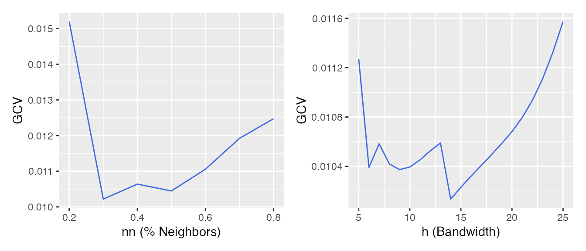
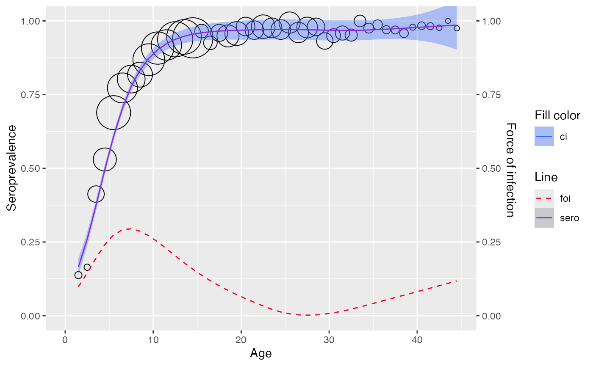

Local estimation by polynomial
Refer to Chapter 7.1
Proposed model
Within the local polynomial framework, the linear predictor is approximated locally at one particular value for age by a line (local linear) or a parabola (local quadratic).
The estimator for the -th derivative of , for (degree of local polynomial) is as followed:
The estimator for the prevalence at age is then given by
- Where is the link function
The estimator for the force of infection at age by assuming is as followed
- Where
Fitting data
mump <- mumps_uk_1986_1987
age <- mump$age
pos <- mump$pos
tot <- mump$tot
y <- pos/totUse plot_gcv() to show GCV curves for the nearest
neighbor method (left) and constant bandwidth (right).

Use lp_model() to fit a local estimation by
polynomials.
